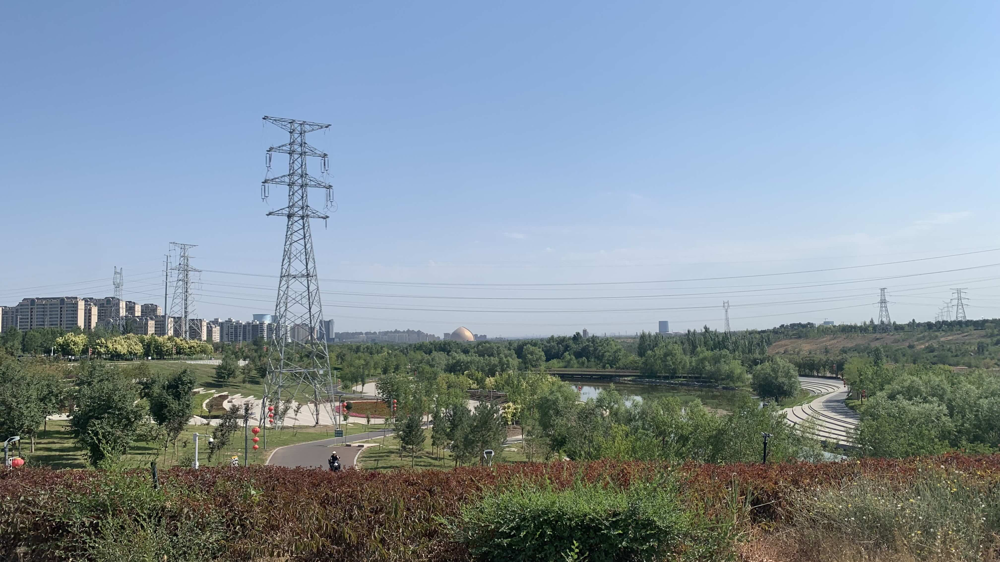
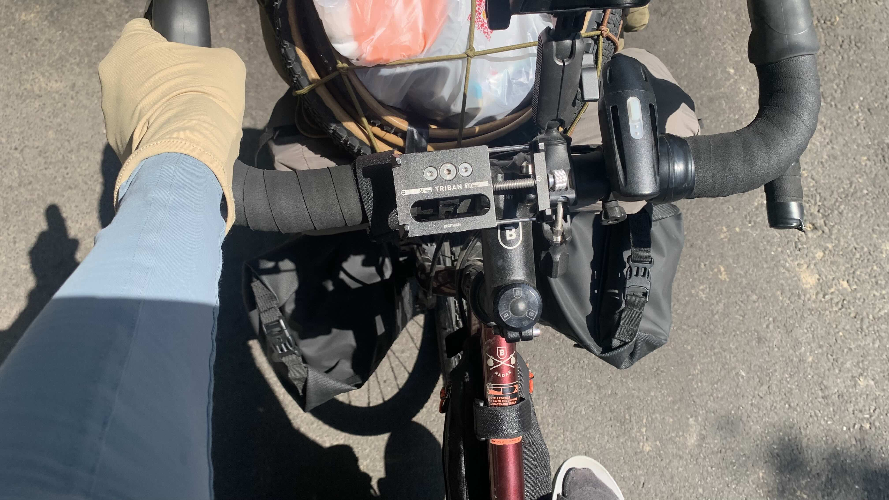
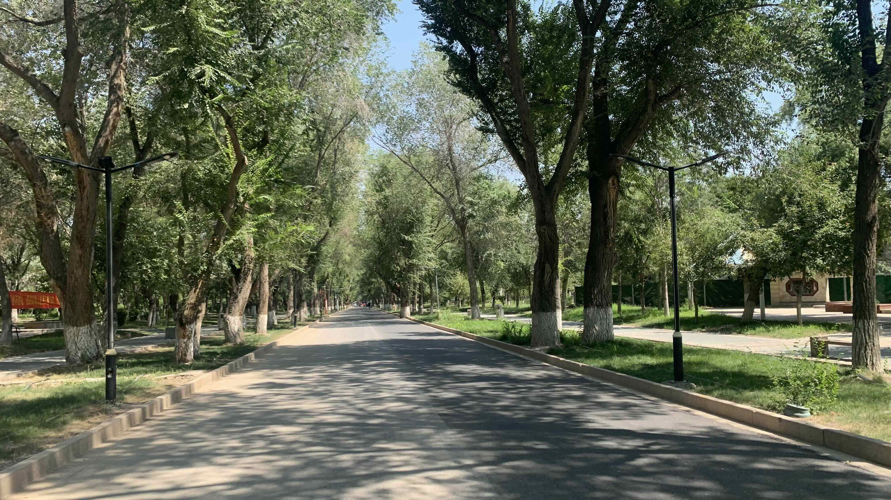
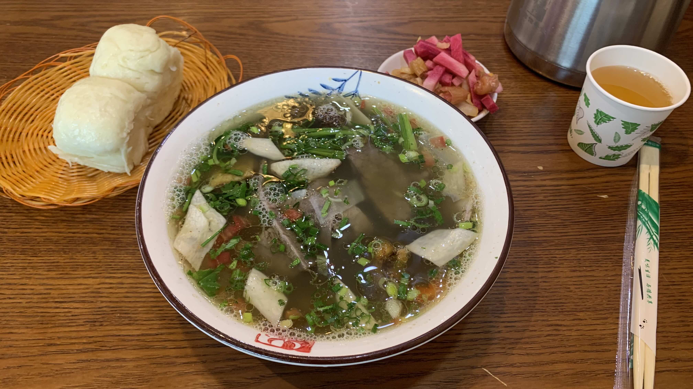
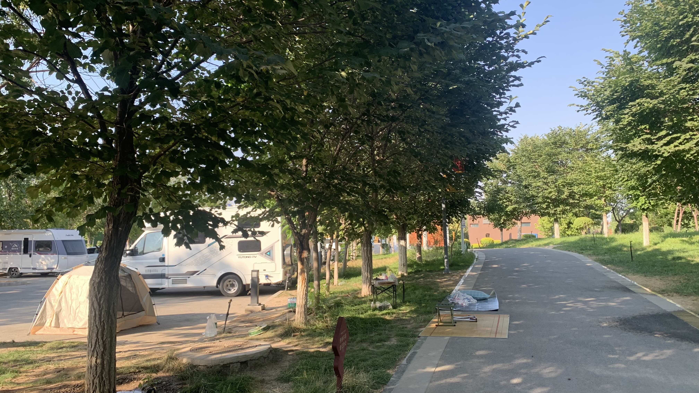
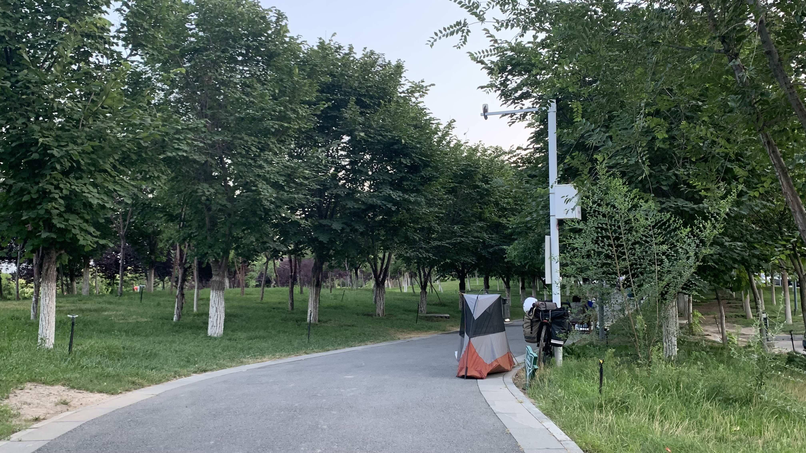
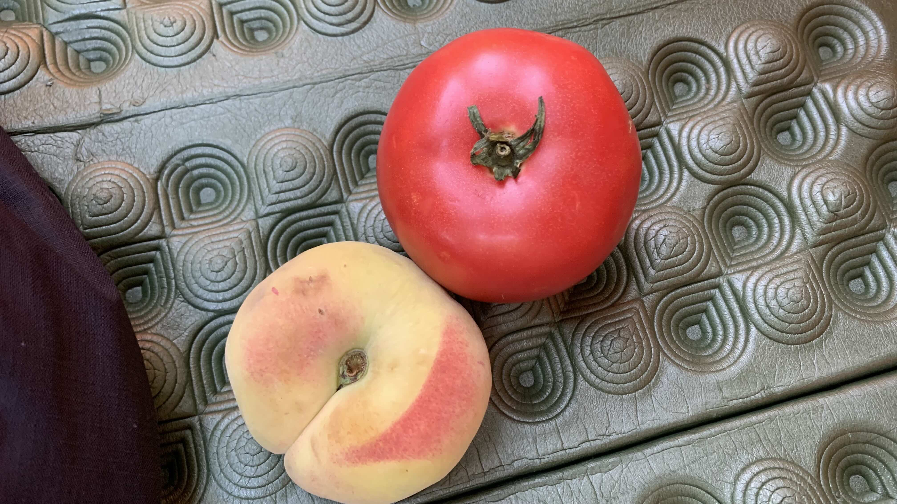
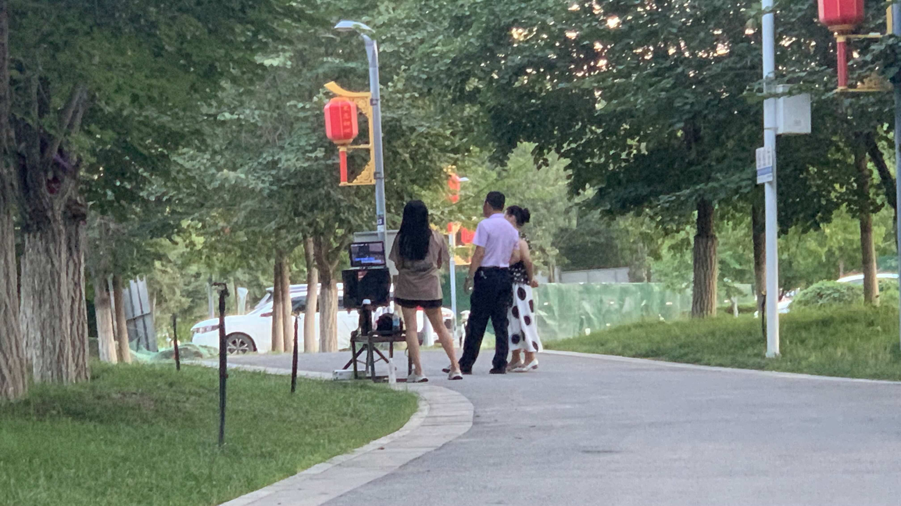

k-Day 139｜退休醫師
從營地出發時，天氣就已經很熱了。幸好往西的路上吹起微微的順風。
國道沒有特別的景色，低著頭踩著踏板，不知不覺便到了昌吉市邊緣。

剛剛在路邊肚子突然劇痛，在烏魯木齊的一週每天都拉肚子。找到河邊一間乾淨的公廁，出來後肚子仍不停翻滾。坐在長椅上欣賞河景，新疆的城市綠化做得很不錯。

等肚子好些，繼續往市中心走。長袖和風衣都收進車包裡，現在的裝備是薄手套、防曬袖套和涼鞋。

有樹蔭真好，在陰影下至少感覺降了十度。

肚子仍在絞痛，不敢喝咖啡，下午吃了有名的新疆丸子湯附贈油塔子。打算休息到五點，如果恢復了，就繼續騎往呼圖壁。或者二十五公里外有座公園，但廁所離公園有六公里的距離。
吃了幾口肚子又開始絞痛。看來不只不能騎車，必須找個離廁所最近的地方睡一晚。

來到河濱公園營地，自行車道上有許多躺臥的人體。雖然覺得有礙觀瞻，也不太好對著這些人的臉拍。
剛停好車，把睡墊攤在草坪上，立刻就出現一名工作人員。
「這草坪不能躺。大家都躺路上，晚上也有像你搭帳篷的。」
剛剛在心裡瞧不起那些在自行車道上坐臥的人，原來他們也是身不由己。搭起帳篷的我，也成了那些被我暗自看不起的人。

天氣太熱，只搭起內帳躺在裡面休息。和同在車道上的一對夫婦對看一眼。太太首先往我的帳篷方向靠近。
對話的開頭是這樣的：「你這個帳篷不錯，會熱嗎？還是會啊？我還想買一個這樣的。」
一輛賣冰的流動攤車經過，他沒有回頭，只是朝斜後方瞥了一眼，低頭對我說：「路上賣的這種冰水不要買。」說完停頓了一下，又補充道：「胃跟天氣是相反的，我是退休醫師。」
因為上班經常要輪班，導致身體出了狀況。擁有多年就醫經驗的我，也順勢分享了自己經歷過的神乎其技。
「針灸最厲害的還是我在巴黎時遇到的一位中醫師，據說是山東醫院退休的。至於吃中藥則是台北的重慶堂......」
「他是在哪裡學的？」「大概幾歲？」「專長是什麼？」一連問了這三個問題，聽完我的回答後，太太說：「還是年紀大的醫師醫術比較好。」
醫師大致聽完我的旅行路線後，突然壓低聲量，湊近耳邊小聲地說： 
「以後別和人說那麼多，有人問你就說是本地的。見到一個人，你覺得第六感不對就趕快走。你旅行這麼久見過這麼多人，你要是直覺不對，不要說話趕緊找藉口離開。不要說你是一個人，也不要說你去哪裡，就說你的朋友在前面等你。可能我在醫院工作，看得太多，這幾年環境不好，人都變了。」
停頓了幾秒，他又補了一句：「跟這些人不要說得太多，他們大多不是本地的，不是說我有偏見，他們平常接觸的人......」「比較雜？」我替他說完剩下的話。
看我點頭答應，他回到老公旁邊。沒多久拿了一顆番茄和一顆桃子走來：「這都是我們自己種的。你加我微信吧，要是路上有什麼我能幫你的，要是沒辦法我也會老實和你說。」
此時一直在角落煮東西的老公抬起頭，看著我膝蓋上的貼紮說：「你腳上貼的是髕骨受傷吧？我兒子也有貼所以我知道。他運動很好，是軍人，被選中成為代表的。」
接著補了一句：「你是台灣來的？大陸很安全......」
「你不要說這種話，會讓人聽到，我都已經跟他說好了。」退休醫師打斷老公。
不一會兒，見他兩人正準備收拾東西。退休醫師先起身離開，臨走前又折返回來對我說：「我們先走了，你也快離開吧。記住我說的，最重要就是平安，其他什麼都可以再來。」
看著番茄和桃子是相當感謝，可是你們帶著幾袋東西來到河邊，飯也沒煮，也沒坐下休息，和我說了這麼幾句話就離開，究竟是來做什麼的呢？

晚上九點，躺在車道旁的帳篷裡，每隔幾分鐘就有電動車從旁呼嘯而過，一輛路過的電動車對我的帳篷發出嫌棄的聲音。
不遠處有位大叔和兩位大姐在車道上架起直播器材。晚上十點，兩排紅燈籠亮起來，想必他為了讓直播間獲得漂亮畫面，絲毫不在乎他們背後的營區有許多人正準備睡覺。
為什麼？為什麼電音舞曲還要嘶吼？
今日花費： 芭樂茶 19、丸子湯 28元